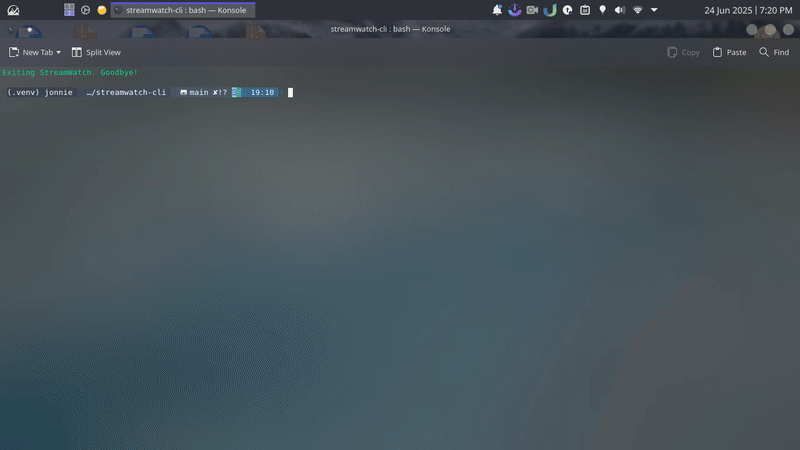

StreamWatch
Your Lightweight CLI Live Stream Companion
pip install streamwatchOverview
Lightweight & Fast
Say goodbye to resource-hungry browsers. StreamWatch is kind to your CPU and RAM, providing a snappy experience.
Focus-Friendly
No distracting ads or unnecessary web content. Just your streams, clear and direct in your terminal.
Efficient Workflow
Check all your favorite live streams and launch them instantly from a single, quick command-line interface.
See StreamWatch in action:
How to Use
Getting started with StreamWatch is simple:
- Install StreamWatch:
pip install streamwatch - Prerequisites: Ensure you have Python (3.7+), Streamlink, and MPV Media Player installed and in your PATH.
- Run StreamWatch:
streamwatch - Add Streams: On first run, or using the 'A' option, add your favorite stream URLs.
- Navigate & Play: Use the interactive menu (arrow keys or number input) to select and play live streams.
For detailed commands and options, check out the full documentation.
Key Features
- ✨ Enhanced Live Status Display (Username, Platform, Category)
- ⌨️ Interactive Arrow Key & Number Input Navigation
- 🚀 Direct Media Player Playback (via Streamlink)
- ⚙️ In-Playback Terminal Controls (Stop, Next/Prev, Quality Change, etc.)
- 🔄 Automatic Stream Reconnection Attempts
- 💾 Persistent User Configuration (Stream List & Settings)
- 🎨 Colorful Terminal Interface (powered by Rich)
- 📜 Detailed Logging for Troubleshooting
- ➕ Add/Remove streams easily
- ⏱️ "Play Last" quick access
Documentation
For comprehensive information on installation, usage, configuration, and contributing, please refer to the official documentation (our README) on GitHub:
View Full Documentation on GitHub